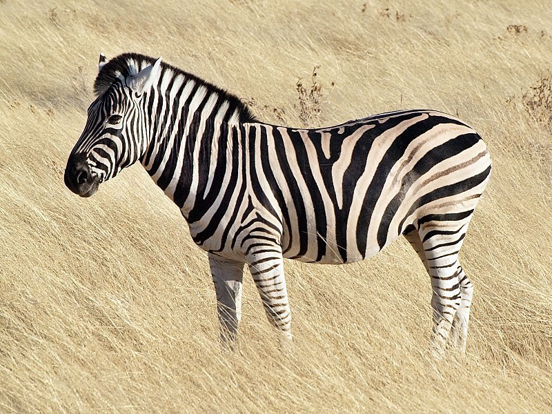
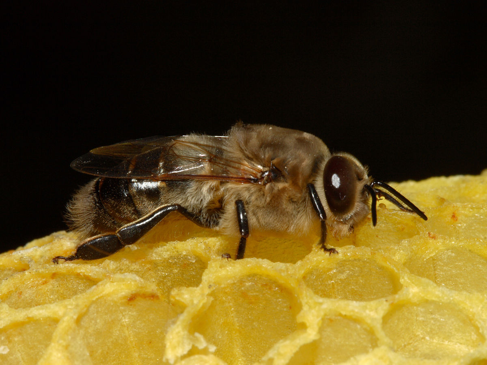

Zebra
Equus zebra
| Reino: | Animalia |
| Classe: | Mammalia |
As zebras são mamíferos que pertencem à família dos cavalos, os
equídeos, nativos da África central e do sul. A pelagem deste animal consiste num conjunto de listras
contrastantes de cor, com o seu corpo todo branco e algumas listras pretas, dispostas na vertical,
exceptuando nas patas, onde se encontram na horizontal. São geralmente animais sociais que vivem desde
pequenos harém a grandes manadas. Ao contrário de seus parentes mais próximos, cavalos e burros, zebras
nunca foram verdadeiramente domesticadas.
É nas savanas africanas onde as zebras habitam. Encontram-se distribuídas por
famílias: macho, fêmeas e filhotes. Estes animais, por serem atacados habitualmente por leões, podem se
tornar animais extremamente velozes, pois para fugirem dos predadores, utilizam a fuga e seus fortes coices,
podendo quebrar até a mandíbula de um felino. As listras das zebras vão escurecendo com a idade, e estes
animais, embora se pareçam, não são todos iguais.
Há três espécies de zebras: a zebra-da-planície, a zebra-de-grevy e a
zebra-da-montanha. A zebra-das-planícies e a zebra-da-montanha pertencem ao subgénero Hippotigris, mas a
zebra-de-grevy é a única espécie do subgénero Dolichohippus. Esta última se assemelha a um jumento,
ao qual está intimamente relacionada, enquanto as duas anteriores são mais parecidas com cavalos.. Todas as
três pertencem ao género Equus, junto com outros equídeos vivos.
Zangão
Apis mellifera
| Reino: | Animalia |
| Classe: | Hymenoptera |
O zangão, zângão ou abelhão é o
macho das diversas espécies de abelhas sociais, especialmente da abelha-europeia. Caracteriza-se pelo porte
superior às obreiras e pela ausência de ferrão. Alheio às atividades de manutenção da colmeia, não produz
mel porque não possui os órgãos essenciais para tais atividades. Sua única função é a de fecundar a abelha
rainha, ação que acontece durante o voo nupcial.
O zangão nasce de ovos não fecundados: este fenômeno, que é um exemplo de
partenogênese, consiste no desenvolvimento de um embrião sem necessidade de fertilização; a rainha, neste
caso, não utiliza o sémen do macho (zangão) e põe ovos que contêm apenas o seu material genético. O zangão
não possui órgãos de defesa nem de trabalho. Dotado de excepcional visão e olfato, é capaz de detectar
rainhas virgens até dez quilômetros de distância.